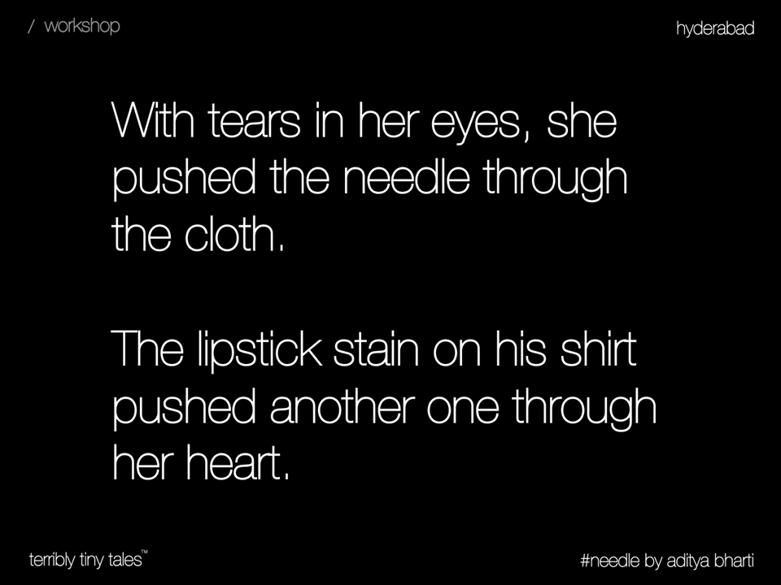
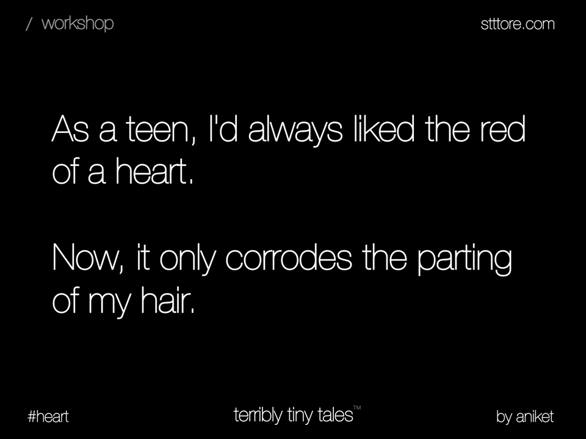

terribly tiny talesTM




Long story short
From storifying news to condensing classics, a tale is a book that only takes a minute.
A world full of stories
Like hot chocolate during the monsoons, and pina colada during summer, our tales are here to quench every emotion you throw at us.
Here's to youth
Human race has been built on a foundation of stories, and we love telling them. Our tales make sure we keep the legacy alive.
Tiny is the next big thing
From storifying news to condensing classics, a tale is a book that only takes a minute.
Everyone's a storyteller
From storifying news to condensing classics, a tale is a book that only takes a minute.
You're one in a million
From storifying news to condensing classics, a tale is a book that only takes a minute.Brands we've worked with

|

|
|

|

|

|
Woohoo! More brands!
Join our community

|
| About | FAQs |
ttt
Download |
| Privacy | Blog | |
| Terms of Service | Press |